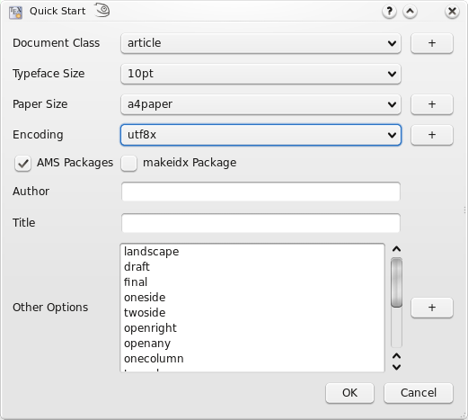
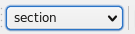
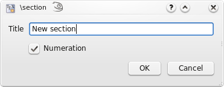
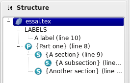
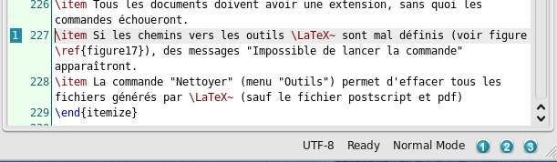
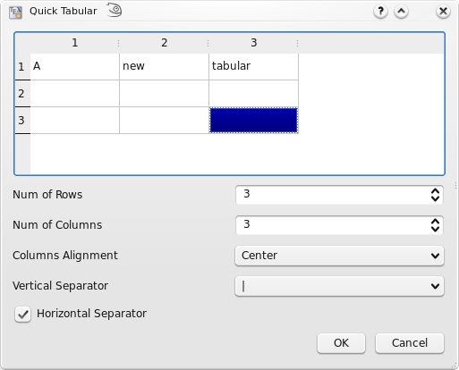
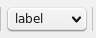
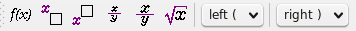
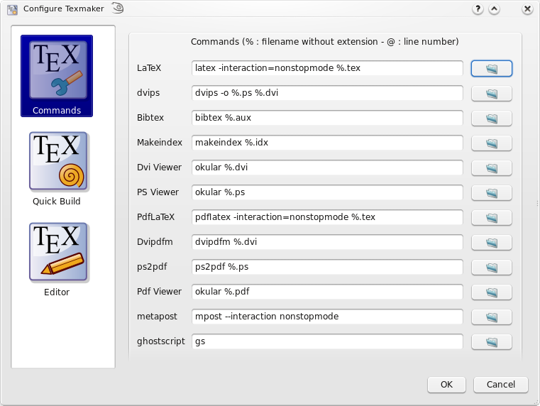

The standard commands (cut, copy, find...) can be launched via the "Edit" menu and the "Edit" toolbar.
To define the preamble of your document, you can use the "Quick start" wizard ("Wizard" menu).

This dialog allows you to set the main features of your document (class, paper size, encoding...).
Note : You can add other options by clicking the "+" buttons. All yours settings are recorded.
You can also type your own preamble model in the editor : with the "Copy/paste" or "Save As" commands, you can use it for a new document.
To define a new part (section,subsection...) in your document with Texmaker, just use this combobox in the toolbar :

This will cause a dialog to pop up which allows you to define the style of the part (section,subsection...).
Note : the "Structure View" is automatically updated.

The "Structure View" (left panel) lets you quickly reach any part of your document. All you need to do is to click on any item (label, section...) and you will be taken to the beginning of the corresponding area in the editor.

The "Structure View" is automatically updated when you save or compile your document. You can also use the "Refresh Structure" ("Edit" menu) command at any moment.
For each file, three bookmarks can be used to speed up navigation : just click on a line number to add or remove a bookmark. When you have already defined three bookmarks, you must remove one of them to add a new bookmark. To jump to the line corresponding to a bookmark in the editor, just click on the buttons in the status bar.

You can quickly set the format of a part of your text with this toolbar :

Additional option: a selected text can be directly framed by certain environments. Example: while clicking on the button "Bold" after having selected the word "Hello" , you will obtain the code: \textbf{Hello}.
This option is available for all the environments indicated by "[selection]" in the "LaTeX" menu.
The usual "spacing" commands are available in the "LaTeX" and "Math" menus. To insert quickly the "new line" LaTeX command, you can use the corresponding command in the toolbar (shortcut : Ctrl+Alt+return)
The usual list environments code can be insert quickly via the "LaTeX-List" menu.
Note : the shortcut for the \item command is Ctrl+Alt+H.
With the "Tabular" wizard ("Wizard" menu), the LaTeX code for a tabular environment can be quickly inserted :

You can set the main features of your table.
Note : this dialog allows you to type directly the code in the cells.
The corresponding LaTeX code is automatically inserted in the editor.
To help you to insert a "tabbing" code, you can use the "Tabbing" wizard ("Wizard" menu) :

To insert a picture in your document, just use the "\includegraphics" command in the "LaTeX" menu. Then, click on the "browser" button in the dialog to select the graphic file.
Note : you can insert a "figure" LaTeX environment ("LaTeX - Environments" menu) before inserting the picture.

This toolbox in the toolbar allows you to insert quickly the label, cite, ref, footnote... code.
Note : the labels used in your documents are displayed in the "Structure View".

Additional option:for the \ref command, a dialog box allows you to select directly the label.
You can toggle in the "in-line math" environment with the "f(x)" button in the toolbar (shortcut : Ctrl+Alt+M) or with the "Math" menu. The shortcut for the "display math" environment is : Alt+Shift+M.
The "Math" toolbar allows you to insert the most currents mathematical forms (frac, sqrt...) like the \left and \right tags.

With the "symbols panels" in the structure view, you can insert the code of 400 mathematical symbols.

You can also define the format of your mathematical text via the "Math" menu.
For the "array" environments, a wizard (like the "Tabular" wizard) is available in the "Wizard" menu. With this wizard, you can select the environment : array, matrix, pmatrix.... The cells can be directly completed.

Before compiling your first document, you must set the path to the LaTeX related programs by using the "Configure" command in the "Options" menu ("Preferences" under macosx).
WARNING : On windows, you must use / to separate the directories (and not \) and the path to the program must be surrounded by quotes .
Example (viewdvi command) : "C:/Program Files/TeXLive/bin/win32/windvi.exe" %.dvi

The easiest way to compile a document is to use the "Quick Build" command ("Quick" button - shortcut : F1). You can define the sequence of commands used by the "Quick Build" command via the "Configure Texmaker" dialog.
You can also launch each command one by one (shortcuts : F2...F12 - see the "Tools" menu).
Note : the "Clean" command in the "Tools menu" allows you to erase the files (dvi, toc, aux...) generated by a LaTeX compilation (except the ps and pdf files).
Warning :All yours files must have an extension and you can't compile an "untitled" file or a file with a space in his name.
With the "Quick Build" command, the log file is automatically displayed in the "Messages / Log file" pannel. The detected errors are highlighted. While clicking on the number of a line in the "log" file ,the cursor is placed on the corresponding line in the editor.

The "Next Latex Error"and "Previous LaTeX Error" commands allow to get to the errors detected during compilation.
Texmaker allows you to work onto documents separated in several files.
To include a TeX file into your document, just use the "\include{file}" command in the "LaTeX" menu. The file will appear in the "Structure View". With a click on his name, Texmaker will open it.
Then, you can define your "master document" with the "Options" menu. All the commands of the "Tools" menu will apply only to this document even when working on the "children" documents (you can even close the "master" document).
Note : you can leave the "master" mode with the "Options" menu.
For the "bib" files , the "Bibliography" menu enables you to directly insert the entries corresponding to the standard types of document.
Note: the optional fields can be automatically deleted with the "Clean" command of the "Bibliography" menu.

Texmaker allows you to insert your own tags (shortcuts : Shift+F1...Shift+F10). These tags are defined with the "User - User Tags" menu.
Note : if the code of the menu is "%environment", Texmaker will directly insert:
\begin{environment }
\end{environment }

You can also launch your own commands (shortcuts : Alt+Shift+F1...Alt+Shift+F5) These commands are defined with the "User - User Commands" menu.
The metapost keywords can be inserted with the "Metapost" panel in the "Strcuture View" and the "mpost" command can be launched via the "Tools" menu.
This command (from the "Tools" menu ) produces a set of html pages from a LaTeX source file with one image for each html page. Each page in the slide presentation corresponds to one of the postscript pages you would obtain running LaTeX.
The command also produces an index page corresponding to the table of contents you would obtain with LaTeX. Each item of the index page includes a link to the corresponding html page.
You can create links in the html pages by using the \ttwplink{}{} command in the tex file.
Synopsis :
\ttwplink{http://www.mylink.com}{my text} (external link)
\ttwplink{page3.html}{my text} (internal link)
\ttwplink{name_of_a_label}{my text} (internal link)
Warning : You can't use this command with the hyperref package (and some others packages).